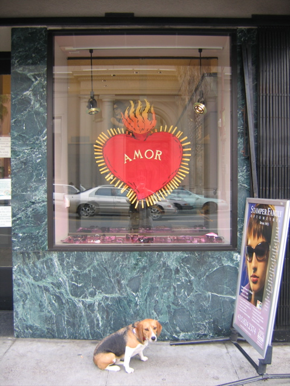

<--Previous
Up
Next-->

Stamper Family Optometry
Penny's optometrist always has good window displays. For a while last year there was a marching bass drum with the logo of the Myopic Eye Marching Band.